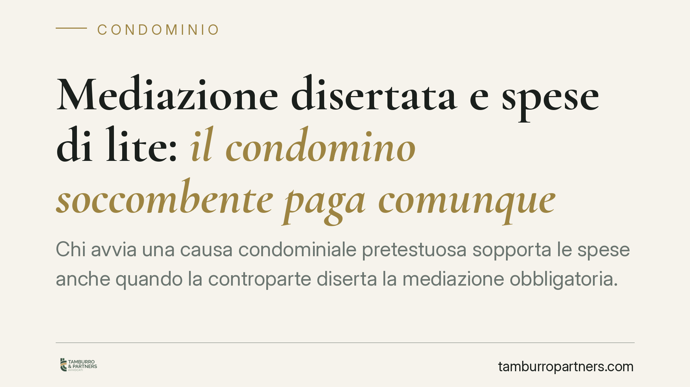

Mediazione disertata e spese di lite: il condomino soccombente paga comunque
Chi avvia una causa condominiale pretestuosa sopporta le spese anche quando la controparte diserta la mediazione obbligatoria. Sono due piani distinti: l'esito nel merito, che segue la soccombenza, e il comportamento in mediazione, che ha sanzioni proprie e non ribalta la condanna alle spese. Chiariamo la distinzione e le conseguenze pratiche per condomini e amministratori.

Il caso in sintesi
Un condomino cita in giudizio il condominio, la sua domanda viene respinta perché infondata e, ciononostante, egli invoca la mancata partecipazione dell'amministratore alla mediazione per evitare la condanna alle spese. La questione è ricorrente: la diserzione della controparte in mediazione può neutralizzare la regola della soccombenza?
La risposta è negativa e si fonda su un principio semplice: il piano del merito e quello del comportamento processuale in mediazione restano autonomi. La condotta scorretta di una parte in fase conciliativa non trasforma in fondata una domanda che tale non è.
Inquadramento normativo
Occorre tenere distinte due discipline che spesso vengono confuse.
La regola sulle spese è dettata dagli artt. 91 e 92 c.p.c. L'art. 91 c.p.c. impone la condanna alle spese della parte soccombente, cioè di chi perde la causa. L'art. 92, comma 2, c.p.c. consente al giudice di compensare le spese, in tutto o in parte, solo in ipotesi tassative: soccombenza reciproca, questione nuova o mutamento della giurisprudenza. La mera diserzione della mediazione da parte del vincitore non rientra tra queste ipotesi.
Le conseguenze della mancata partecipazione alla mediazione hanno invece una sede propria. Nel testo storico del D.Lgs. n. 28/2010, l'art. 8, comma 4-bis, prevedeva due sanzioni per chi non partecipava senza giustificato motivo: il giudice poteva trarne argomenti di prova ex art. 116, comma 2, c.p.c. e condannava la parte assente al versamento di una somma pari al contributo unificato dovuto per il giudizio. La riforma Cartabia (D.Lgs. n. 149/2022) ha rimodulato la materia, trasferendo il contenuto di quella disposizione nell'attuale art. 12-bis del D.Lgs. n. 28/2010, che oggi disciplina in modo organico le conseguenze processuali ed economiche della mancata partecipazione.
Altro ancora è l'art. 13 del D.Lgs. n. 28/2010, che regola le spese quando il provvedimento del giudice coincide con il contenuto della proposta di conciliazione rifiutata: ipotesi diversa, che qui non ricorre.
Il ragionamento: due piani che non si toccano
La ragione per cui i due profili restano separati è coerente con la funzione delle norme. Le spese seguono l'esito della lite perché sanzionano chi ha costretto la controparte a difendersi senza fondamento. La disciplina della mediazione, invece, tutela un interesse diverso: incentivare la partecipazione effettiva al tentativo conciliativo.
Quando l'amministratore diserta la mediazione ma il condomino perde comunque nel merito, la domanda giudiziale resta infondata a prescindere dalla condotta altrui. Il giudice potrà valutare la diserzione ai fini degli argomenti di prova e applicare la sanzione pecuniaria a carico dell'assente, ma questi effetti operano sul piano probatorio e sanzionatorio, non su quello della soccombenza. Un torto processuale non compensa un torto sostanziale.
È una lettura in linea con l'orientamento che distingue nettamente la valutazione del merito dalla ponderazione delle condotte processuali, senza consentire che la seconda alteri la regola dell'art. 91 c.p.c.
Implicazioni pratiche
Per il condomino che intende agire, il messaggio è chiaro: contare sulla possibile assenza dell'amministratore in mediazione per schermarsi dalle spese è una strategia perdente. Se la domanda è infondata, la condanna alle spese arriva comunque, e a queste possono aggiungersi ulteriori aggravi in caso di lite temeraria.
Per l'amministratore e per il condominio, la vittoria nel merito non giustifica la disinvoltura in mediazione: la mancata partecipazione espone alla sanzione pecuniaria e agli argomenti di prova, con possibili ricadute negative nella valutazione complessiva del giudice.
Cosa fare in concreto
- Valutate la fondatezza della pretesa prima di agire: un'analisi preliminare del merito evita cause destinate alla soccombenza e alla condanna alle spese.
- Partecipate alla mediazione, anche se convinti delle vostre ragioni: l'assenza ingiustificata produce conseguenze economiche e probatorie autonome.
- Documentate ogni giustificato motivo di eventuale mancata partecipazione, perché grava sulla parte assente l'onere di spiegarne le ragioni.
- Verificate la disciplina applicabile alla vostra procedura in base alla data di avvio, distinguendo il regime pre e post riforma Cartabia.
- Consigliamo di gestire delega e mandato dell'amministratore con attenzione, così da assicurare una presenza effettiva e non meramente formale al tavolo conciliativo.
Disclaimer
Contributo informativo a cura di Tamburro & Partners - Avv. Giuseppe Tamburro. Non costituisce parere legale.
Ogni condominio ha una storia a sé.
Se gestisci un'amministrazione e vuoi un confronto su una specifica questione condominiale, scrivi allo studio. Ti rispondiamo entro un giorno lavorativo.